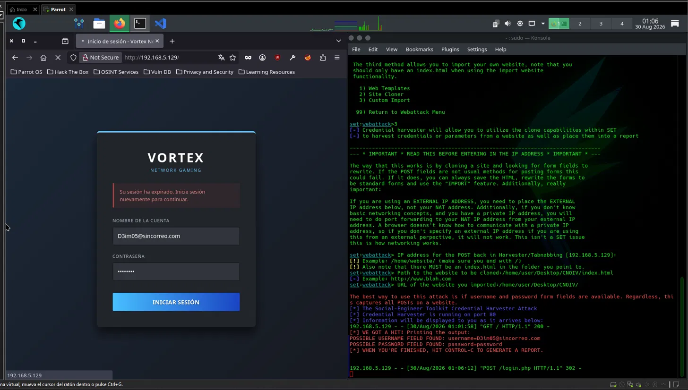
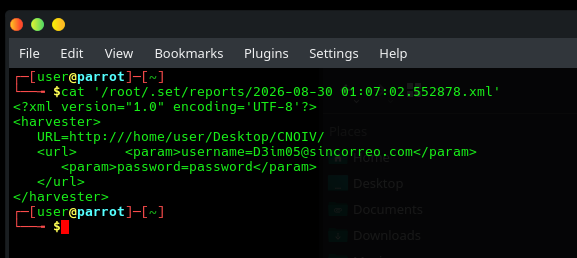

Estudiante: Angel Aaron Acuña Quezada (181583)
Catedrático: Mtro. Servando López Contreras
Fecha de entrega: 30 de agosto del 2026
Todo ataque inicia con una fase de reconocimiento, y si la red corporativa cuenta con un sistema de seguridad robusto, el eslabón más vulnerable es el factor humano. A esta manipulación psicológica se le conoce como ingeniería social, utilizando señuelos basados en el sentido de urgencia, recompensas o miedo para comprometer la red interna.
Objetivo: Implementar y analizar, en un entorno controlado, una simulación de ingeniería social mediante Social-Engineer Toolkit (SET), utilizando una página web ficticia para comprender el funcionamiento de una técnica de captura de información y reconocer elementos de phishing.
Escenario: El área de seguridad de Vortex Gaming recibió reportes sobre un mensaje de actualización de credenciales. El enlace dirige a un portal con el logotipo de la empresa y el mensaje: "Su sesión ha expirado", el cual no pertenece a la organización.
Laboratorio: Se utilizó VMware para virtualizar una máquina atacante con ParrotOS y la herramienta SET usando el módulo Credential Harvester Attack Method. Mediante "Custom Import", se alojó un archivo HTML fraudulento para interceptar y almacenar en texto plano las credenciales de la víctima.
A) Indicadores de Alerta
- > URL discrepante: Uso de una dirección IP local en lugar del dominio oficial.
- > Falta de cifrado SSL: Uso de HTTP generando advertencia de "sitio no seguro".
- > Canal anómalo: Expiración abrupta de sesión sin comunicado previo del departamento TI.
- > Ausencia de validación: Aceptación de cadenas de texto sin comprobar la lógica del formato del correo.
- > Sentido de urgencia: Manipulación que fuerza al usuario a actuar de inmediato.
B) Soluciones Propuestas
- > Autenticación Multifactor (MFA): Bloquea el acceso no autorizado aunque el atacante obtenga la contraseña.
- > Gestor de contraseñas: Evita el autocompletado en URLs falsas al detectar discrepancias con el sitio legítimo.
- > Filtro Anti-Spoofing: Reduce la llegada de correos fraudulentos.
- > Filtro DNS: Bloquea resoluciones hacia dominios maliciosos o muy recientes.
- > Capacitación continua: Mantiene al personal actualizado sobre nuevas tácticas.
> INTERFAZ DEL PORTAL FALSO

> REGISTRO DE CREDENCIALES

Conclusión:
La actividad demostró lo peligroso que pueden ser los ataques de ingeniería social, comprobando que las defensas técnicas más robustas pueden ser eludidas si el usuario final es manipulado. Se comprendió que el Credential Harvester explota la confianza visual, lo que resalta la necesidad de combinar controles técnicos como MFA con concientización humana constante para mitigar estos riesgos de manera integral.